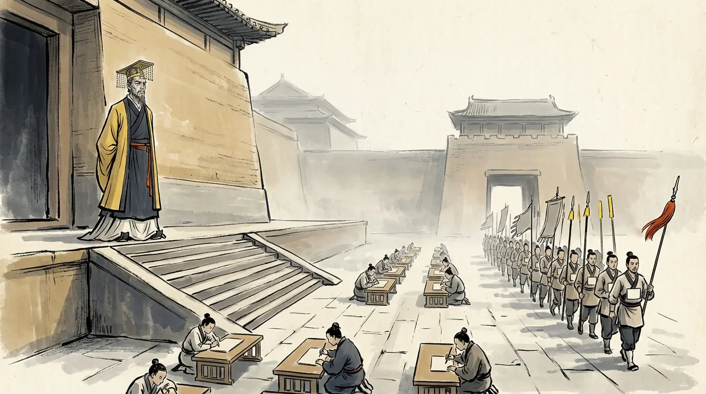
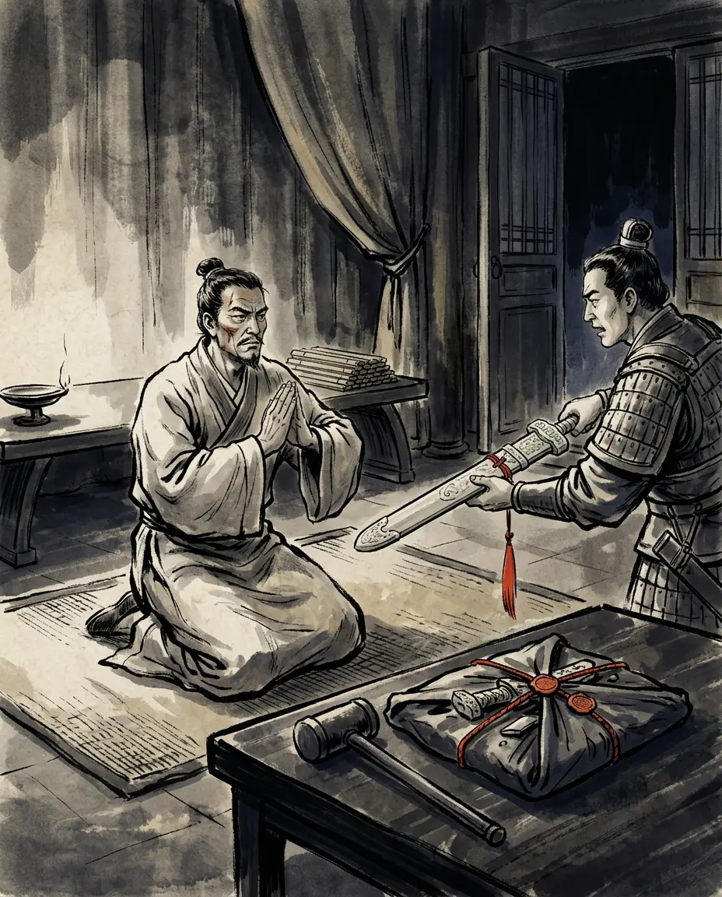
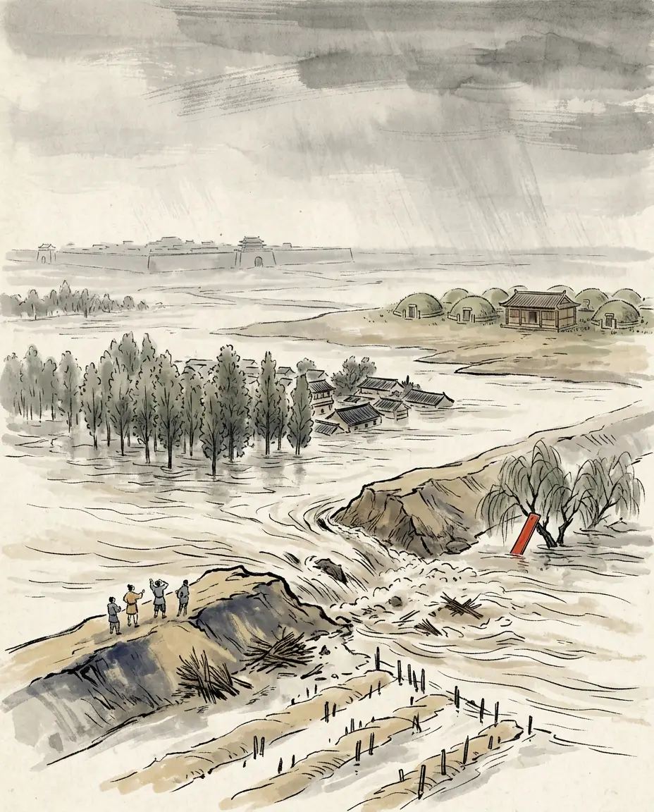
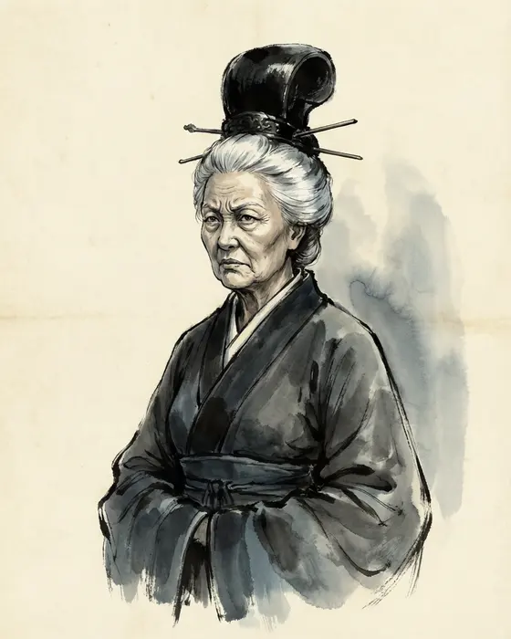
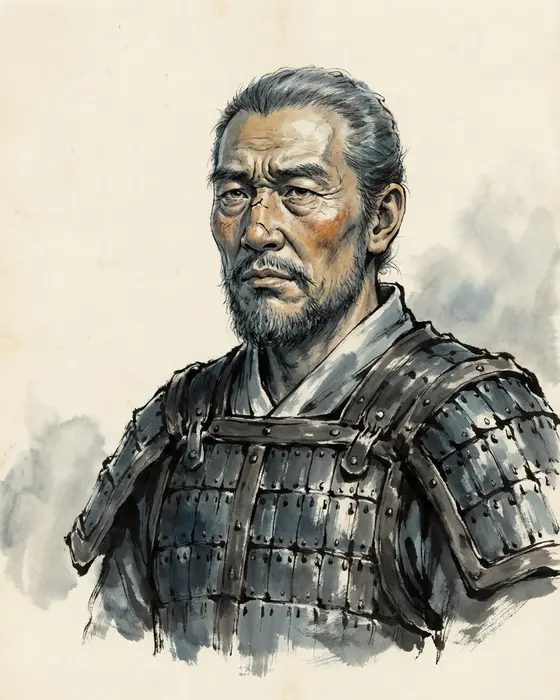
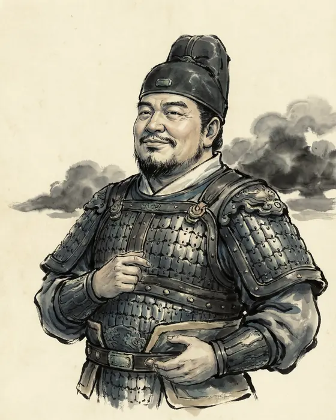

d. 23 CE
Regent, then the one emperor of the New. Poor in a house of nine marquisates, famous for his own frugality, he governed an empire the way he had read a classic: by correcting the words.

![Panel 02: The Wang house had nine marquisates and five Grand Marshalships in the two reigns before his, and five of the emperor's uncles were enfeoffed on a single day. One branch got no marquisate, because its head died early: out of that gap came a student of the ritual classics who tasted his dying uncle's medicine for months with his hair unwashed and his belt unloosened, was made Marquis of Xindu with fifteen hundred households in 16 BCE, and gave away his carriages, his horses and his fur coats to his guests until his house had nothing left.](../../../panels/han09/02-nine-marquises.webp)

![Panel 04: Emperor Cheng died on the wu-horse night of the sixth month of 1 BCE; Wang Mang was Grand Marshal two days later, and the favourite who had held the emperor's ear killed himself that same day. He made a child emperor whose mother's family he could keep out, took the title Duke Who Settles the Han in the first month of 1 CE, then the Steward-Balance above the Three Excellencies, then the nine bestowments in 5 CE, and shut the regency's law with fifty new articles whose punishment was transportation to the Western Sea: the transported ran to thousands and tens of thousands, and the people began to resent him.](../../../panels/han09/04-the-regency.webp)
![Panel 05: The casket was bronze with two sealed labels. One read: the Heavenly Emperor's travelling seal, the gold cabinet's chart. The other read: the Red Emperor's travelling seal, handed over to the Yellow Emperor's metal book of mandate — and the Red Emperor was the Han's founding lord, named in the text by his given name. Inside was a list of eleven assistants for the new emperor: eight were Wang Mang's actual ministers, two were men looked up in the registers because their names sounded auspicious, and the eleventh was the man who had made the casket.](../../../panels/han09/05-the-copper-casket.webp)
![Panel 06: To take the throne he had to have the Han's transmission seal, and it was with the one person in his family who had out-vetoed him twice: his aunt, the great-grandmother of the emperor he had deposed. Her own nephew came to ask. She answered that a new dynasty should cut its own seal and hand it down for ten thousand generations, and that she would not use the unlucky seal of a state that had lost the mandate; then she threw it on the floor at Wang Shun's feet and told him and his brothers they would be clan-exterminated. Wang Mang was delighted, and gave a banquet in her honour on the terrace in the middle of the Weiyang lake.](../../../panels/han09/06-the-old-widow.webp)
![Panel 07: His first great law named the fields and the human beings. All land under heaven became the king's fields and all slaves became private retainers, and neither might be bought or sold; a household with fewer than eight male mouths holding more than one well-field — nine hundred mu — had to hand its surplus to its nine kindreds, its neighbours and its hamlet. Anyone who argued that the well-field was not a sage's institution, and so misled the crowd, was to be thrown to the four frontiers to fend off the monsters.](../../../panels/han09/07-kings-fields.webp)
![Panel 08: The law held three years and was reversed by a middle-rank palace officer named Ou Bo, who told the emperor that the well-field was a sage's law but had been abolished for a very long time, that Qin had read the people's hearts and got the greatest profit from it, and that the whole realm had still not wearied of the harm Qin left behind. To go back against the hearts of the people now, he said, and chase a track cut off a thousand years ago, was something that even Yao and Shun risen again could not do in a hundred years.](../../../panels/han09/08-oubo.webp)
![Panel 09: In the years from 7 CE he changed the money again and again. First he made a big piece worth fifty of the old coins, a knife worth five hundred and an inlaid knife worth five thousand, running alongside the Han's familiar five-zhu piece; then, because he worked out that the character for the Liu surname contains the words for gold and for knife, he abolished the knives and the five-zhu together and issued a table of twenty-eight denominations in five materials — gold, silver, tortoise-shell, cowries, copper and cloth.](../../../panels/han09/09-twenty-eight-coins.webp)

![Panel 11: The New's Twelve Generals of the Five Powers went out from the capital with the New's seals and gathered the Han's in. Everywhere they reached the same instruction ran: the kings of the Western Regions were all degraded to marquises, three hundred and seventy-six of their officers off their Han seals; the king of Gouting was made a marquis, resented it, and was tricked to death by a commandery governor taking his hint; the chief of Goguryeo was lured out and beheaded so that his people's title could be cut short into below Goguryeo; and at the chanyu's court the envoy brought a new impression for the same jade — the Han's had read Seal of the Chanyu of the Xiongnu, the New's read Tally of the Chanyu of the New Xiongnu.](../../../panels/han09/11-the-smashed-seal.webp)
![Panel 12: In 12 CE the titles of the empire's Eleven Dukes were revised: the character for new was replaced by the character for heart, and the character for heart was then replaced by the character for good faith — one sound, three writings, no change of referent. The commandery governors were renamed Great Instructors, Chang'an became Ever-Safe, Luoyang was proclaimed the eastern capital, and the provinces were redone as twelve out of the Documents and nine out of the Tribute of Yu, because the two classics disagreed and the emperor's edict said that dynasties change each other's arrangements and each has its reasons.](../../../panels/han09/12-the-naming.webp)
![Panel 13: The monopolies were his own idea and the classics' words: the state sold the wine, the salt and the iron tools, cast the coin, taxed every taking from the named mountains and marshes, bought in the markets when things were cheap and sold when they were dear, and lent to the people at three in the hundred a month. The penalty for breaking the grips was death. When the governor of Jingzhou told him that the state had stretched its six grips over the mountains and the marshes and that the people were bandits because of the taxes, he lost his office.](../../../panels/han09/13-six-grips.webp)
![Panel 14: The first rising of the famine years was started by a woman. Her son was a clerk of Haiqu and the county magistrate killed him for a small offence, so she broke up her family's wealth, sold wine, bought knives and crossbows with the money, got a hundred and odd poor young men behind her, took the county, killed the magistrate and offered his head on her son's grave; the bravest of them called themselves the Fierce Tigers. Some years later the starving of Qing and Xu brought out the man history remembers: Fan Chong raised a hundred and odd men and reached ten thousand inside a year, and the armies sent against him could not beat them.](../../../panels/han09/14-red-eyebrows.webp)
![Panel 15: He answered the collapse with numbers and with names. The calendar was rebuilt on a cycle of thirty-six thousand years, so that the era was to be changed every sixth year, and the Renewal-of-Year general officer was re-created to match the mandate-texts, because, as the book says, it was meant to dazzle the common people and dissolve the bandits — and the crowd laughed. He set up five supreme commander offices and a paper order of battle of thirteen and a half million men, and the postal envoys criss-crossed the commanderies ten a day with no stored grain to issue them, so that horses were taken off the road out of the peasants. And he pulled down ten-odd imperial parks to fire their tiles for a nine-temple complex whose main hall was forty zhang on each side and seventeen zhang high; the labourers who died were counted in tens of thousands.](../../../panels/han09/15-the-empty-treasury.webp)
![Panel 16: The army raised to crush the east mustered at Luoyang in the summer of 23 CE: the Book of the Han calls it a million under arms and four hundred and twenty thousand arrived, the treasury emptied to send it out with jewellery and fierce beasts along, so that the eastern provinces would see how rich the state was and be frightened. Inside Kunyang there were eight or nine thousand men; the relieving column Liu Xiu led out counted a thousand and odd horse and foot, and three thousand chosen men were pushed in beside the water. The siege was several tens of layers deep, and the city's offer of surrender was refused.](../../../panels/han09/16-kunyang.webp)
![Panel 17: In the tenth month of 23 CE the troops came in by the Xuanping gate, the way the people called the gate of partings; a crowd of young men of the city set fire to the workshop gate and shouted at the tyrant to come down and surrender, and the fire ran into the consorts' quarters — where the woman who lived there was his daughter, the Han's empress, who had been given a new title under the New and had refused to wear it. He went out to the terrace in the palace lake with his mandate documents and his bronze Dipper still hugged in his arms, with a thousand and odd of his officers following, meaning to make a stand behind the water. A palace woman told the soldiers where he was.](../../../panels/han09/17-the-terrace.webp)
![Panel 18: Ban Gu wrote the life a generation after the man died, out of the court's papers, and his verdict is the one this page is built on: Qin burned the Odes and the Documents in order to set up its own opinions; Wang Mang recited the Six Arts in order to embroider his wicked words; they came to the same end by the same road, and both to destruction. The Treatise on Food and Money gives the arithmetic underneath it — before Mang was killed, the empire's households and mouths were halved — and closes the business with a date-stamp: four years after the levy of the Pig-Rushing Band the Han troops killed Mang, and two years after that the restored dynasty washed away the vexing and the harsh, struck the five-zhu coin again, and began afresh with the world.](../../../panels/han09/18-the-verdict.webp)
A regent who became an emperor, the child he set aside, the ministers who praised him for it, and the farmers who walked into Chang'an.





The Ming romances of the Han dynasties, the stage plays drawn from them and the serials drawn from those are entertainment — and not a source. Where their famous scenes depart from the histories, we leave them out of the story and put them here.
Wang Mang was a Chinese socialist a thousand years early: state land, state monopolies, price control and planned credit.
This is a twentieth-century reading — Hu Shi made it explicitly in the 1930s — and the laws name their own model, which is not a ministry of planning but the Rites of Zhou: the well-field of Yu, the Zhou officer who bought up unsold goods, the five levels of price in the Yueyu, the loan against interest for funerals and sacrifices. Ban Gu's character note is decisive: he could not start a single thing without first finding a line of scripture to authorise it. And a coin table that prices a tortoise at two thousand one hundred and sixty cash against gold at ten thousand cash a catty is a ritual ordering of precious things, not a budget. It was not egalitarian either: the land law took nothing from a household of eight or fewer male mouths, and its author withdrew it in the fourth year after one officer's memorial.
He was a plain tyrant of the stock type: a monster whose frugality was an obvious lie and whose family life was the usual massacre.
The severity fell on his own house first and the record keeps it. His second son Huo killed a slave, and Wang Mang reproached him and made him kill himself for it, at the marquisate, while he was himself under a sentence of political dismissal; his wife met the wives of the marquises in a cloth knee-cover and a skirt that did not drag, and the guests took her for a servant; by the end his wife had gone blind weeping because he kept killing his sons, a son was given poison and stabbed himself rather than drink it, and four funerals passed through the palace inside a month and ten days. Ban Gu credits him with none of this — his verdict is that the man hid what he felt in order to get a name — but the frugality was real and the empire was still starved, which is the harder thing the record is willing to say.
The Yellow River changed its course and the New dynasty drowned in it.
The breach at Wei commandery in 11 CE is in the biography, together with the emperor's reason for not closing it: his ancestral tombs were at Yuancheng, he had dreaded the water reaching them, and when the river went east away from the graves he let it run. But the book's order of events is the opposite of the environmental reading. The breach comes in 11 CE and the first mass risings in 17 CE; between them sit the money changes, the slave and land law, the six grips at the mountains and marshes, and the thirty-six hundred cash a head on households holding slaves. When the emperor's own envoys came back and reported why the bands kept re-forming, they quoted the bandits and not the river: the prohibitions were so many that a man could not lift his hand, and shutting the door on yourself was still a crime if your neighbour cast coin.
The Red Eyebrows were a programmed peasant army, with a manifesto, a banner and a theory of the state.
The memoir says the reverse in as many words. They were bandits because they were desperate and had no plan to take cities or hold ground; their entire code was two clauses — a killer dies, a wounder pays for the wound — held by spoken word, with no documents, no banners, no formations and no commands; their senior title was the village title Third Elder; and the red paint on their eyebrows was adopted on the eve of a battle so that they could tell their own men from Wang Mang's soldiers, which is the only reason they have a name at all. They grew because the famine and the law made them grow, ten thousand and odd in a year. The first band of the famine years was raised by a woman who sold wine to buy crossbows so that she could kill the magistrate who had executed her son.
Guangwu took Kunyang with ten thousand and smashed a million by a genius's surprise attack, with heaven visibly on his side.
The odds are the historians' own and they do not match. The Book of the Han calls the mobilisation a million and reports four hundred and twenty thousand mustered at Luoyang; the Book of the Later Han keeps both figures, gives eight or nine thousand in the city, a thousand and odd in the relieving column and three thousand at the water — and then adds the meteorite in the camp, the cloud that fell and scattered a foot above the ground, and the drowned tens of thousands that stopped the river running. No early text has ten thousand against a million, and the romances of the restoration, which supply the chivalric pursuit-and-flight version everybody knows, are Ming and Qing books and not evidence. What the records credit is a strike on a stationary ring: the besiegers were ordered not to move from their camps while their commander fought with ten thousand, they could not help one another, and a mass of conscripts held together by the army-marshal's law broke in the rain.
Every caption and quotation in this episode traces to one of these. Where scholars disagree, the panel says so.
The usurper's names did not hold, his currency did not circulate, and his river moved. The distant kinsman who had been laughed at for farming took up the dead dynasty's title: Episode 10 · The Gentle Emperor (Luoyang, 25–57 CE). The man who replaced him farmed his own fields first. Or back to the Han line, or meet the cast.